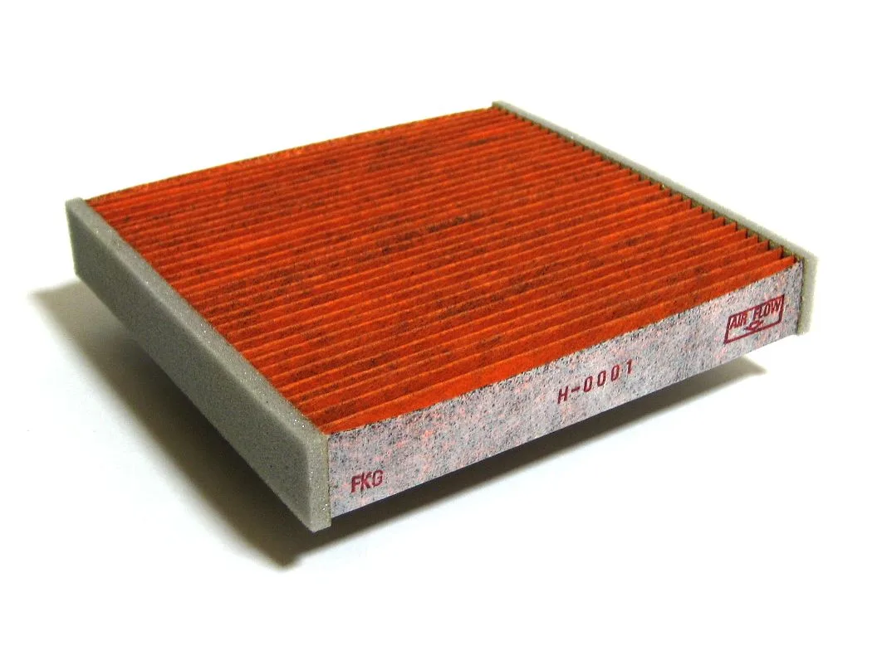
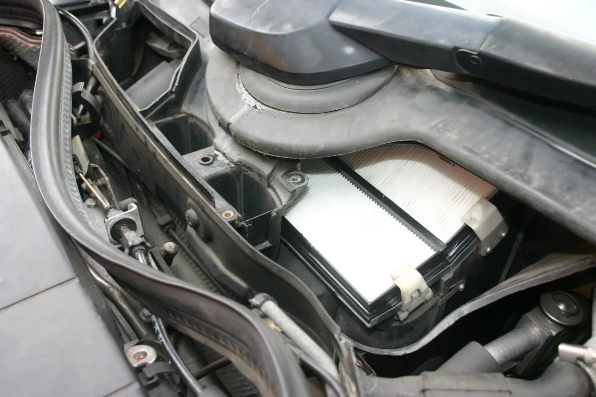
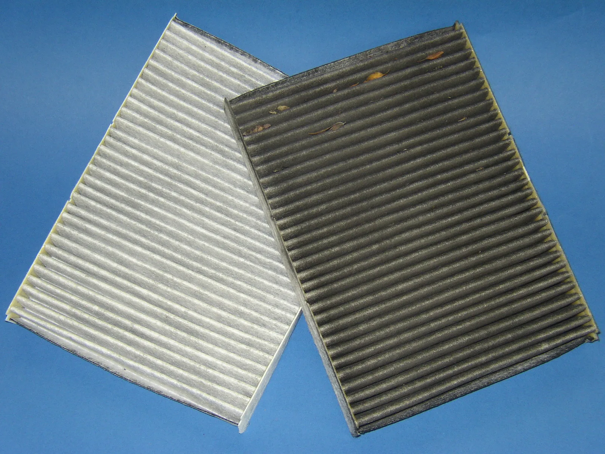

▲ 심하게 오염된 캐빈 필터. 교체 시점을 훌쩍 넘긴 상태다 ⓒ Wikimedia Commons (CC BY-SA 4.0)
에어컨을 켰을 때 나는 퀴퀴한 냄새의 원인을 냉매나 에어컨 시스템 고장으로 오해하는 경우가 많다. 하지만 실제로는 훨씬 단순한 부품, 캐빈(실내) 필터가 범인인 경우가 대부분이다.
1. 에어컨 냄새의 진짜 원인

▲ 새 캐빈 필터. 오염된 필터에 낀 곰팡이와 먼지가 특유의 냄새를 만든다 ⓒ Wikimedia Commons (CC BY-SA 3.0)
캐빈 필터는 외부 공기가 차량 실내로 유입되기 전 미세먼지와 꽃가루, 유해가스를 걸러주는 역할을 한다. 이 필터가 오염되면 걸러진 먼지와 습기 속에서 곰팡이·세균이 번식하기 쉬운 환경이 만들어지고, 이것이 에어컨을 켤 때마다 나는 냄새의 주된 원인이 된다. 냉매를 아무리 충전해도 필터가 더러우면 냄새 문제는 해결되지 않는다.
2. 6개월(1만km) — 왜 이 숫자인가
업계에서 통상 권장하는 교체 주기는 6개월 또는 주행거리 1만km 중 먼저 도래하는 시점이다. 다만 제조사·차종별로 기준이 조금씩 다른데, 현대차 공식 오너스 매뉴얼은 투싼 등 일부 모델을 12개월 교체로, 아이오닉5 같은 전기차는 15,000km 교체로 안내하고 있다. 반면 국내 정비 업계에서는 미세먼지 등 환경 요인을 감안해 이보다 짧은 6개월(1만km) 교체를 권하는 경우가 많다. 평소 주행을 많이 하지 않는 차량이라도 시간이 지나면 필터 자체의 정전기 집진 능력이 떨어지므로, 최소 연 1회는 교체하는 것이 권장된다. 반대로 공사장 인근이나 혼잡한 도심 도로를 자주 달린다면, 정해진 주기보다 더 자주 확인하고 교체해야 한다.
3. 성능은 세 가지 기준으로 갈린다

▲ 엔진룸 필터 하우징에 장착된 캐빈 필터. 대개 후드를 열고 접근할 수 있다 ⓒ CarPrism

▲ 새 필터(왼쪽, 흰색)와 교체 시점이 지난 필터(오른쪽, 회갈색·이물질 낀 상태) 비교 ⓒ Wikimedia Commons (CC BY-SA 2.5)
캐빈 필터의 성능은 미세먼지 제거효율, 유해가스 제거효율, 항균도 세 가지로 평가된다. 최근에는 여기에 활성탄이나 구리 성분을 더해 탈취·항균 기능을 강화한 고기능성 필터도 널리 쓰인다. 미세먼지가 심한 계절이라면 이런 고기능 필터로 업그레이드하는 것도 고려할 만하다.
4. 셀프 점검 — 빛에 비춰보면 안다

▲ 곰팡이가 번식한 캐빈 필터. 냄새와 알레르기 증상의 흔한 원인이다 ⓒ CarPrism
셀프 점검법
- 필터를 하우징에서 꺼내 밝은 쪽을 향해 들어본다.
- 주름 사이로 빛이 거의 통과하지 않는다면 이미 교체 시점이 지난 것이다.
- 표면이 회갈색으로 덮여 있는지 육안으로 확인한다.
- 대부분 후드를 열고 조수석 글로브박스 뒤쪽에서 손쉽게 확인·교체가 가능하다.
이 점검은 도구 없이 몇 분이면 끝난다. 정비소 방문이 번거롭다면, 필터 위치와 규격만 확인해 셀프 교체하는 것도 어렵지 않은 정비 항목으로 꼽힌다.
5. 정리
체크포인트
- 캐빈 필터는 6개월(1만km) 또는 연 1회 교체가 기본이다.
- 에어컨 냄새의 상당수는 냉매가 아니라 오염된 필터가 원인이다.
- 혼잡·먼지 많은 도로를 자주 달린다면 주기를 앞당겨야 한다.
- 빛에 비춰 주름 사이 투과율과 색상만 확인해도 교체 시점을 알 수 있다.